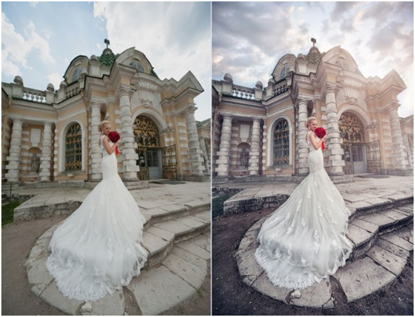
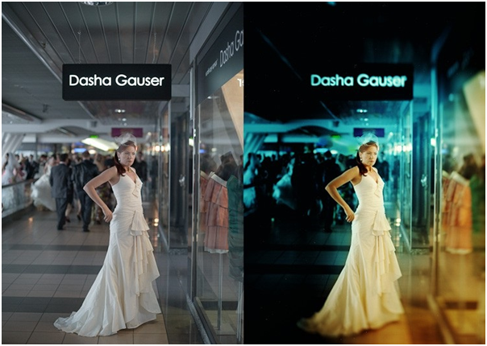

Выбор свадебного платья – одна из наиболее ответственных задач для невесты. Многие девочки уже в младшей школе грезят себя принцессами на самом главном балу их жизни – на свадьбе. Еще не понимая важности и ответственности решения о вступлении в брак, рисуют в воображении фото, на которых сказочно-красивые белоснежные платья, воздушные и невесомые.
Когда день, нарисованный в воображении, близится, выбор наряда становится головной болью для каждой невесты. Как купить свадебное платье, чтобы оно:
- было модным в этом сезоне, а не новинкой прошлых лет
- подходило к стилистике оформления банкетного зала и тематике свадебной церемонии
- выглядело не хуже, чем на свадебных фото подруг
- идеально смотрелось на фигуре
- невеста выглядела в платье красиво и была самой счастливой в мире новобрачной
Выбрать такое платье, чтобы оно отвечало всем критериям и купить его по разумной цене – это только одна часть задачи. Не менее важно привыкнуть к платью, научиться в нем двигаться, то есть здесь важно покупать изделие вживую, а не по фото с заграничного сайта или салона, расположенного в другом городе.
Выбираем свадебное платье: вживую или по фото
Спорить с важностью выбора после примерки, а не покупки «вслепую» – бессмысленно, и каждая невеста старается примерить свадебный наряд перед тем, как купить его.
Большинство невест стараются купить наряд в салоне. Важность примерки, создания общего праздничного образа, с прической, фатой и туфлями никто не оспаривает. Видеть, как красиво платье смотрится на девушке, идет ли ей, стройнит или полнит, делает более юной или добавляет несколько лет – эти и подобные «секретики» свадебного наряда можно увидеть только в примерке в условиях салона с его множеством зеркал и обилием освещения. Тем не менее, память о свадебной церемонии хранится не только в умах гостей, но и в кадрах видеофильма и на фотоснимках.
Как красиво будет выглядеть платье на природе, в загсе и на танцполе в ресторане – это часто две, а то и три «большие разницы». В зависимости от используемой фотографом техники, в частности, линейки Кодак, Никон или Сони, одно и то же платье, снятое с одного ракурса, может приобрести кипенно-белый оттенок, слегка синеватый или теплый бежевый.
В процессе обработки, ретуширования снимков и создания фотоальбома многие нюансы можно скорректировать, однако не все. И даже если ваш приглашенный фотограф сумеет добиться идеальной четкости, цветопередачи и полностью ликвидирует возможные недочеты свадебной фотосессии, то скорректировать видео почти не удается. А уж любительские кадры ваших друзей и знакомых и вовсе запечатлеют «факты» такими, какими их увидит фотообъектив или камера смартфона.
Как купить платье правильно
Перед тем, как отправиться в салон, к мастеру индивидуального пошива или к девушке, недавно отпраздновавшей собственную свадьбу и продающей красивое подвенечное платье, выполните несколько нижеперечисленных советов, а лучше все:
- отправляйтесь на примерку платья с мамой, подружками невесты, а также со знакомой портной
- выбрав модель, которая вам очень нравится и красиво смотрится, попросите подруг поснимать вас на смартфоны и скинуть кадры на ваш телефон
- попробуйте выложить фото в Сеть в режиме планирования постов, чтобы увидеть, как ваши снимки после церемонии будут выглядеть в интернете
- покажите «отснятый материал» знакомому фотографу, чтобы он мог определить, какой техникой лучше делать фото- и видеосъемку в запланированном вами месте проведения свадебного торжества
- попросите выбранного вами фотографа и оператора сделать несколько снимков в свадебном наряде, который вы собираетесь купить, а также отретушировать и распечатать фото
Только если вы убедитесь, что выбранные вами наряд и аксессуары создают пленительный образ невесты, а само платье не полнит вас, не добавляет возраста, не скрывает преимущества вашей фигуры и не демонстрирует ее возможный недостаток, можете покупать и само платье, и аксессуары к нему. Вы ведь хотите, чтобы ваши гости не только вспоминали, какой очаровательной невестой вы были на своей свадьбе, но и могли любоваться вашими снимками долгие годы. А альбом с фото и диск с фильмом, которые будут рассматривать ваши дети в внуки, достойны того, чтобы вы уделили выбору вашего подвенечного платья достойное внимание.